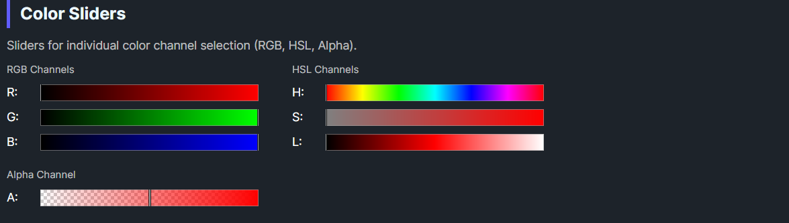

DaisyColorSlider is a slider control for selecting individual color channel values. It supports 7 color channels (RGB + Alpha + HSL) with automatic gradient rendering and a draggable thumb indicator. The slider displays a visual gradient representing the channel's range and supports both horizontal and vertical orientations.
| Property | Type | Default | Description |
|---|---|---|---|
Channel |
ColorSliderChannel |
Hue |
The color channel this slider controls |
Color |
Color |
Red |
The current color value |
Orientation |
Orientation |
Horizontal |
Slider orientation (Horizontal/Vertical) |
NubSize |
double |
8 |
Size of the thumb/nub indicator |
ShowCheckerboard |
bool |
true |
Whether to show checkerboard pattern for alpha channel |
OnColorChanged |
Action |
null |
Optional callback invoked when color changes |
The ColorSliderChannel enum defines which color component the slider controls:
| Channel | Range | Description |
|---|---|---|
Red |
0-255 | Red component (RGB) |
Green |
0-255 | Green component (RGB) |
Blue |
0-255 | Blue component (RGB) |
Alpha |
0-255 | Alpha/transparency component |
Hue |
0-359 | Hue angle in degrees (HSL) |
Saturation |
0-1 | Saturation percentage (HSL) |
Lightness |
0-1 | Lightness percentage (HSL) |
DaisyColorSlider provides two ways to respond to color changes:
slider.ColorChanged += (sender, e) =>
{
Console.WriteLine($"Color changed to: {e.Color}");
};<colorpicker:DaisyColorSlider
Channel="Hue"
OnColorChanged="{Binding HandleColorChanged}" />// In ViewModel or code-behind
public void HandleColorChanged(Color newColor)
{
Debug.WriteLine($"New color: {newColor}");
}
// Or inline
var slider = new DaisyColorSlider
{
Channel = ColorSliderChannel.Hue,
OnColorChanged = color => Debug.WriteLine($"Color: {color}")
};<!-- Basic hue slider -->
<colorpicker:DaisyColorSlider Channel="Hue" Color="Red" />
<!-- RGB sliders with labels -->
<StackPanel Spacing="8">
<TextBlock Text="Red" />
<colorpicker:DaisyColorSlider Channel="Red" Color="{Binding SelectedColor}" />
<TextBlock Text="Green" />
<colorpicker:DaisyColorSlider Channel="Green" Color="{Binding SelectedColor}" />
<TextBlock Text="Blue" />
<colorpicker:DaisyColorSlider Channel="Blue" Color="{Binding SelectedColor}" />
</StackPanel>
<!-- Vertical saturation slider -->
<colorpicker:DaisyColorSlider
Channel="Saturation"
Orientation="Vertical"
Height="200" />
<!-- Alpha slider with checkerboard background -->
<colorpicker:DaisyColorSlider
Channel="Alpha"
ShowCheckerboard="True"
Color="{Binding SelectedColor}" />
<!-- With callback -->
<colorpicker:DaisyColorSlider
Channel="Lightness"
OnColorChanged="{Binding OnLightnessChanged}" />ShowCheckerboard for the Alpha channel to visualize transparency.OnColorChanged callback for simple one-off handlers; use the ColorChanged event when multiple subscribers are needed.This control is part of the Flowery.Uno color picker suite, inspired by the Cyotek ColorPicker library (MIT License).